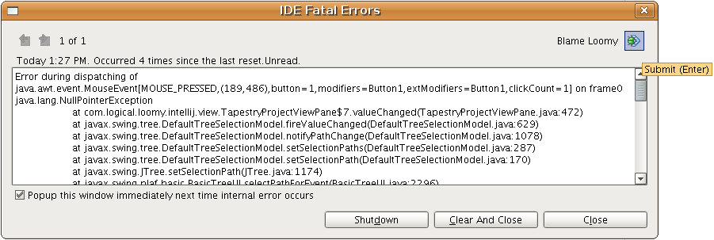
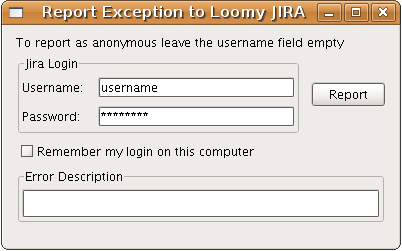
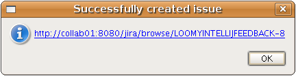

| Error Report Submitter for JIRA |
|
|
This option allows user report an error to Jira. This reporter can be done by an Jira user. To report an error, click in Blame Loomy image.  When you click, a new window appear to do the authentication. 
If the issue is sucessfully created a information message appears to confirm the creation of the issue in Jira.  |